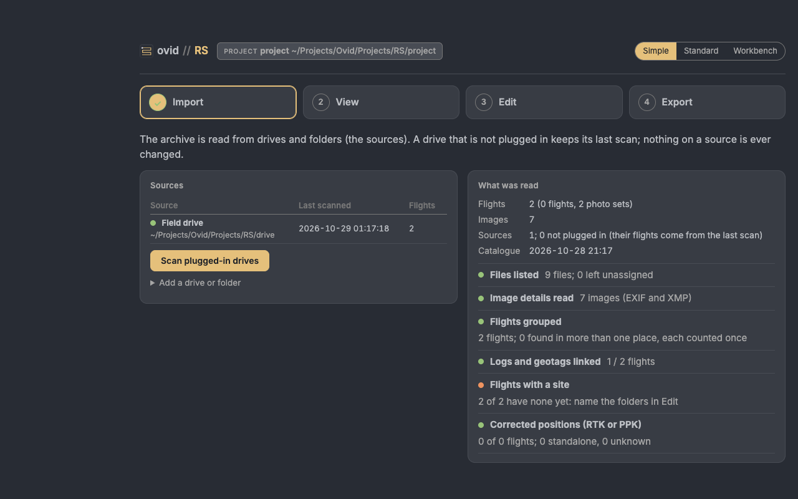

ovid RS how-to guide
One task per section: when to use it, the steps, what changes and how to check it. Page names are those on the left of the Standard view (Map, Timeline, Flight, Imagery, GNSS, QA, Sources, Set-up tables). For a first project, start with the RS quick start; for what RS does to the files and why, see the RS reference guide.
Contents
Simple: 1. Check the archive after a field season; 2. Give flights their sites
Archive: 3. Add a drive or folder; 4. Rescan the sources; 5. Look at a flight; 6. Name a flight and give it a project
Workbench: 7. Confirm or reject a file linked to a flight; 8. Set the time zone of a camera; 9. Set a GNSS base or a positioning status
Review and share: 10. Work through QA; 11. Stitch GNSS survey points; 12. Send the catalogue to someone without R; 13. Report a problem
The three views
The same project, catalogue and edits in three views, switched at the top (Simple, Standard, Workbench) or with ?ui=simple, ?ui=standard or ?ui=workbench in the address. A new install opens in Simple.

- Simple: a field check in four steps (Import, View, Edit, Export). Edit gives folders and flights their sites and names; it changes nothing about what a flight is made of.
- Standard: the map, flight, QA and source pages these tasks use.
- Workbench: what flights are made of and how files are read. Confirmed and rejected links, file rules, time zones, GNSS bases and calibration are edited here; Standard shows those tables and points to the Workbench.
1. Check the archive after a field season
when: New flights are on a drive.
- Simple, Import: Scan plugged-in drives. What was read gives the counts and the checklist.
- View: a tile per folder guess, year or site; Need a look shows the groups with a check to look at. The footprints card draws the group's flights.
- Export: Download the report (HTML), with your initials.
result: Nothing changes in the catalogue; the report records, per site, the flights, dates, sensors, images, corrected positions, ground sample distance, products and checks, with the methods and their sources.
2. Give flights their sites
- Simple, Edit: under Folder names → sites, give each folder name the site it means; camera and backup folders (DCIM, 100MEDIA …) are left out.
- Add to changes, then Save. Drag a single flight onto a site to place it on its own.
result: Every flight in that folder takes the site at the next rebuild of the catalogue.
check: Import: Flights with a site.
3. Add a drive or folder
- Sources: Browse… to the drive or folder, give it a short name, Scan folder. In Simple: Add a drive or folder on Import.
result: The source is added and scanned; its flights join the catalogue.
4. Rescan the sources
- Sources (or Scan plugged-in drives in Simple).
result: Plugged-in sources are read again, only the folders whose files changed; a drive that is not plugged in keeps its last scan.
5. Look at a flight
- Map: click a flight on the map or in the table; the flight shows beside the map. Timeline lists the flights by date.
- Flight: its files, images, positioning, footprint and checks.
6. Name a flight and give it a project
- Flight: give it a display name, project and site; or in Simple, Flight details on Edit.
- Everything typed is saved to
config/and backed up.
7. Confirm or reject a file linked to a flight
when: A log, geotag file or mission was linked to the wrong flight, or a link was missed.
- Links change what a flight is made of, so they are edited in the Workbench (the switch at the top right): open Confirmed and rejected links.
- Confirm or reject the file for the flight; save, then rebuild the catalogue.
result: The link is kept or left out at every later scan.
8. Set the time zone of a camera
when: Image times are off by whole hours from the logs.
- In the Workbench, open Time zones and add a row for the camera or folder with its offset from UTC.
- Save and rebuild.
check: The flight's images and its log line up in time on Flight.
9. Set a GNSS base or a positioning status
- In the Workbench, open GNSS bases to give a base station's position and height, used for flights corrected after the flight (PPK).
- Save and rebuild.
result: The flight's positioning status (RTK or PPK corrected, standalone GNSS, unknown) is shown on the map and on Flight.
10. Work through QA
- QA: the flights with flags (! or ✕) and the files tied to no flight.
- For each, follow the link to the page or table that settles it.
11. Stitch GNSS survey points
- GNSS: upload the survey files (Emlid Reach, DJI RTK or Leica exports). They are stitched into one table: exact repeats dropped, a point name reused with other coordinates flagged.
- Points with latitude and longitude show on the map; grid-only points need a UTM zone typed on the page.
- Export stitched points (CSV).
result: Coordinates are copied as found; nothing is converted. For the accuracy of a product against checkpoints, RMSE_H = √(RMSE_x² + RMSE_y²), with the checkpoint survey error added in quadrature (ASPRS 2023): see the reference guide.
12. Send the catalogue to someone without R
- Sources: Create viewer, then Export viewer (ZIP).
- In Simple, Export gives the catalogue tables and the footprints as GeoJSON.
result: The viewer is a folder that opens in a browser, with the map and the flights.
13. Report a problem
- Press the life-ring button on the top bar: it downloads the troubleshooting zip (versions, logs, problems and the set-up; no raw data).
- Send it with the reference shown in the notice (E- and six characters).
The RS reference guide's Troubleshooting section lists the common messages and what to do.
ovid RS. For what RS does to the data and why, see the RS reference guide.